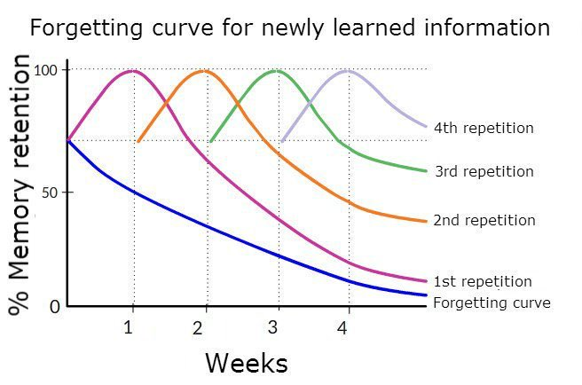

Spaced Practice
Time Based StudyingSpaced practice encourages students to study over a longer period of time instead of cramming the night before.
What Is Spaced Practice?
Spaced practice is a technique that deals with long-term work of students on a subject. It is actually the opposite of working for hours on days when the exam is approaching. It deals with spreading the same amount of study time over a long period of time, rather than working for a long time all day when exam day comes. This method considers this technique because spreading the same amount of study time over longer periods causes more permanent learning in the brain.
Forgetting Curve
If we understand the forgetting curve issue well, we can talk more deeply about spaced practice.
Forgetting curve shows how long the information is deleted when our brain does not make an effort to remember information. In fact, most information that is not repeated is erased from our memory and it becomes more difficult for the brain to remember the deleted data again than before. Because of this fact, the spaced practice method was introduced.
How should we use this method?
- Set your study plan before the semester starts, or make your study plan first on any subject you will study, without leaving it to the last days, a general study plan is a must.
- Twenty-four hours is an important rule. Repeating your lessons or new things you have learned within twenty-four hours, but not as soon as the lesson is over, the next day will make you successful.
- Studying in the long term does not mean not studying at all when the exam day comes, but if you spread the amount of information sent to the brain the day or week before the exam, you will remember faster because this learning style will be more permanent.
Summary
- Plan, the first rule of the spaced practice method is to spread your learning work over a long period of time by planning months and weeks in advance. You should come up with a study plan by dividing your weeks into months and days.
- Continuity, the second issue that should be emphasized for this method is to constantly repeat and work on the subject, even if it is short, within a plan. When the exam week comes, there is no need to work for eight or ten hours a day at this stage. It can be short but continuous.
- Repetition, another aspect of this study method that should not be forgotten, is to repeat old knowledge at regular intervals. When you learn new information, if it takes 3/4 of your study time, it is one of the basic rules to review old information in a 1/4 time.